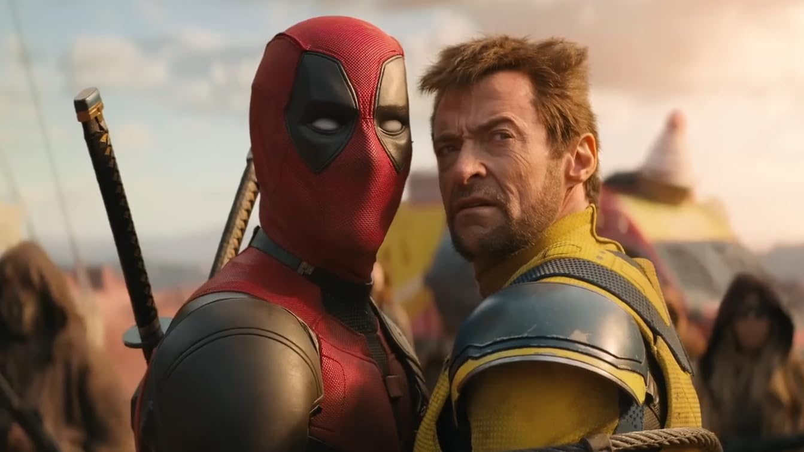
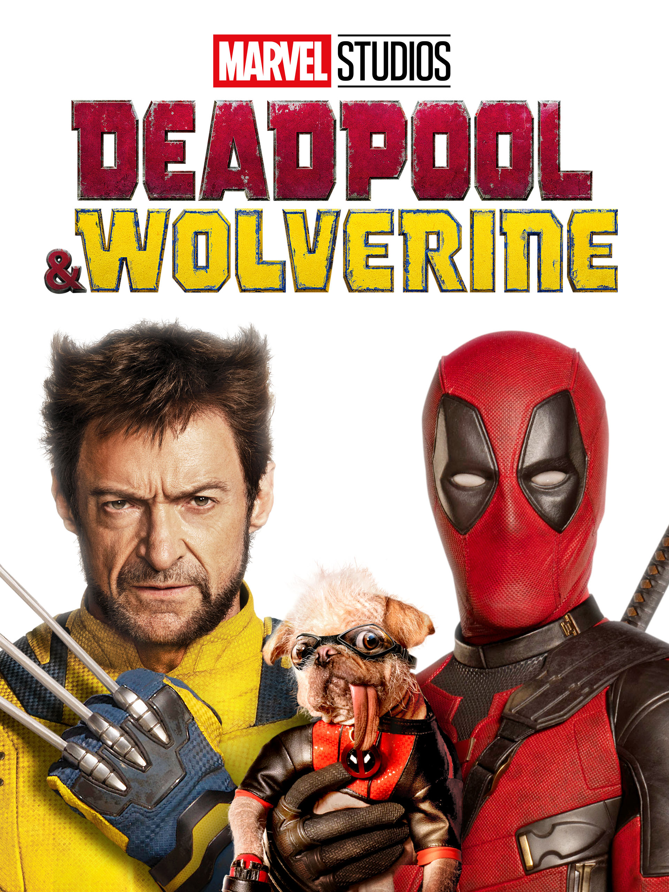

This movie was just a thank you to everyone who grew up watching X-Men movies by bringing old Fox characters into the Marvel Universe. The movie starts with DeadPool digging up Logans body because since he died the universe is going to be destroyed because he was the reason the world would stay alive. After finding Deadpool needs to go to another universe to bring a different Wolverine the main villain starts the process early of destroying Deadpools world. The best moments were every easter egg they put for the fans especially the one my theater went crazy for was when Wolverine put on his mask for the first in all the movies he has been in. This felt like a completion list of for the writers finally able to do this character justice before they are recast.